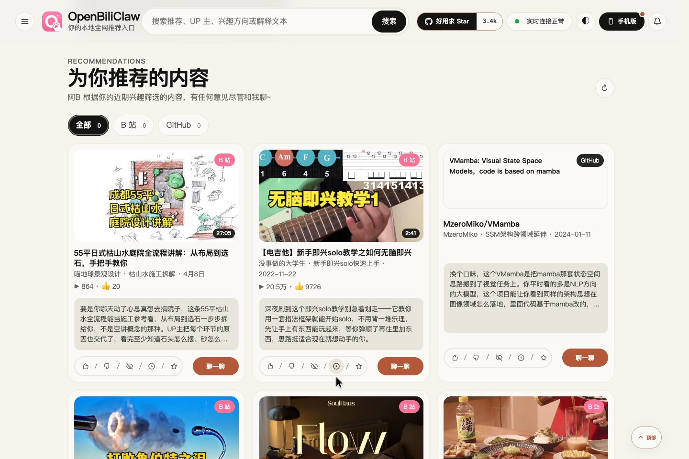
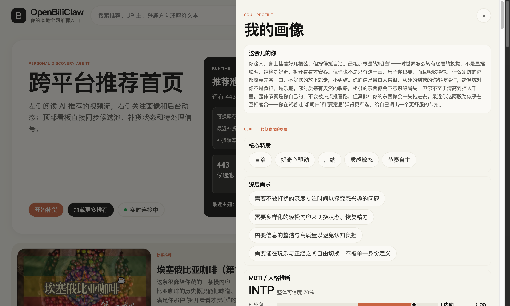

看见它眼中的你
从你授权的历史、收藏和反馈形成画像。你能查看兴趣、内容口味与偏好，检查「喜欢什么」背后的理解是否准确。
你改过的判断会保留，AI 重建画像不会直接覆盖。
开源 · 本地优先 · 可以被你教会的 AI 内容朋友
刷了很多，却没找到想看的
把主题、深度和内容口味说清楚，让发现从你的需求出发。
研究一个兴趣，要在几个平台重复找
用同一份兴趣画像，寻找视频、文章、讨论与开源项目。
只点过一次，就被反复推荐
查看它理解错了什么，直接改画像，或说明不喜欢的原因。

把分散在不同平台的兴趣，连接起来。
不同来源支持的发现、登录与初始化能力不同，按需连接即可。
理解我 → 替我找 → 听我纠正
一次点击很难说明你的真实兴趣。OpenBiliClaw 把对你的理解变成可以查看、讨论和修改的画像，再用于后续发现与推荐。
从你授权的历史、收藏和反馈形成画像。你能查看兴趣、内容口味与偏好，检查「喜欢什么」背后的理解是否准确。
你改过的判断会保留，AI 重建画像不会直接覆盖。
画像参与搜索关键词生成、候选评估与推荐解释。还会沿关联内容和相邻领域探索，提出新的兴趣方向，交给你确认。
每条推荐给出理由，你可以判断它为什么适合自己。
喜欢、不感兴趣、屏蔽作者，或者在对话中说明具体偏好。你给出的纠正会参与画像与后续发现，不必只靠点击来表达自己。
单卡喜欢 / 不感兴趣是软信号；长期偏好可通过编辑或对话说明。

使用场景示例
下面是你可以表达的需求，帮助理解产品适合怎样的使用方式；不是实际生成结果或效果承诺。
使用场景示例 / 学一门新技能
「我是初学者，想要系统跟练、讲清动作的教程，少一点器材带货。」
把学习阶段和内容口味一起告诉它；推荐是否符合需求，可以从理由中判断，再给出纠正。
使用场景示例 / 跨平台做研究
「想看本地 AI 工具的原理讲解、深入文章，也想找能动手试的开源项目。」
连接需要的来源，让同一份兴趣画像参与多种内容的发现；不用在每个平台从零表达兴趣。
使用场景示例 / 兴趣正在变化
「最近少看游戏实况，多看摄影构图思路，想知道画面为什么这样安排。」
用明确反馈、对话与画像编辑表达变化，让之后的发现有机会跟上现在的你。
真实操作实录
读推荐理由，保存感兴趣的内容，再到内容库里找到它。点击播放，跟着走一遍。
独立录制环境中的已有真实推荐，演示浏览和本地保存；录制时未连接模型，不展示实时生成或学习。
文字稿与素材来源手机与桌面连接同一个录制后端。这段实录展示反馈提交和共享内容库，不代表画像或推荐已更新。
如何工作
浏览器插件连接平台，本地后端负责理解、发现和推荐。桌面、手机等入口共享这套服务。
公开内容、授权的个人信号
以及你给出的反馈
理解兴趣 → 发现内容 → 生成推荐
本地保存画像、推荐与历史查看推荐、对话与反馈
让下一轮继续学习
先看看，是否适合你
如果你经常跨平台探索、有长期兴趣，也愿意花一点时间配置模型、连接来源和纠正画像，OpenBiliClaw 值得一试。
它需要运行中的后端来持续工作。云端模型按服务商与用量收费，本地模型需要相应硬件；发现质量受来源可用性、兴趣信号和模型能力影响。
它提供独立的推荐入口，不会修改 B 站等平台的原生推荐首页。目前仍在积极开发，初次配置与持续反馈是体验的一部分。
开始使用
推荐从桌面安装包开始。准备一台电脑、可用的模型服务，以及至少一个可提供兴趣信号的内容来源。
打开后端的初始化页面，配置 LLM 和 embedding，并连接希望使用的来源。按来源要求登录或填写公开用户名。
http://127.0.0.1:8420/setup/等待服务检查、信号导入和首轮发现完成，再打开推荐首页。后续可随时给反馈、调整兴趣。
http://127.0.0.1:8420/web桌面包仍为实验性预发布，首次启动可能遇到系统安全提示。精简版首次下载向量模型，with-embedding 版已内置；两者都需要另行配置 LLM。
完整安装指南与常见问题更多使用入口
桌面 Web 与浏览器插件之外，也可以在手机或已有的 Agent 工作流中访问。它们都需要连接运行中的后端。
还需要运行后端。插件负责连接内容平台和提供交互入口，后端负责画像、发现、推荐和存储。桌面安装包会帮你运行这个后端。
OpenBiliClaw 以 MIT 协议开源。你需要配置可用的 LLM 服务，通常使用自己的 API Key；模型服务的费用取决于所选服务商和用量。本地 embedding 可以使用 Ollama。
画像和历史默认保存在你运行后端的电脑上，插件不向项目开发者运营的服务器上传数据。使用云端模型时，必要内容会发送给你配置的服务商；自托管或远程访问的边界见隐私政策。
不用。先连接你常用的来源即可。部分来源支持公开发现或公开用户名初始化；需要个人历史、收藏等信号的来源，按引导登录并授权。
由社区一起完善
试试看，也欢迎反馈问题、贡献代码，或在 GitHub 上支持这个项目。